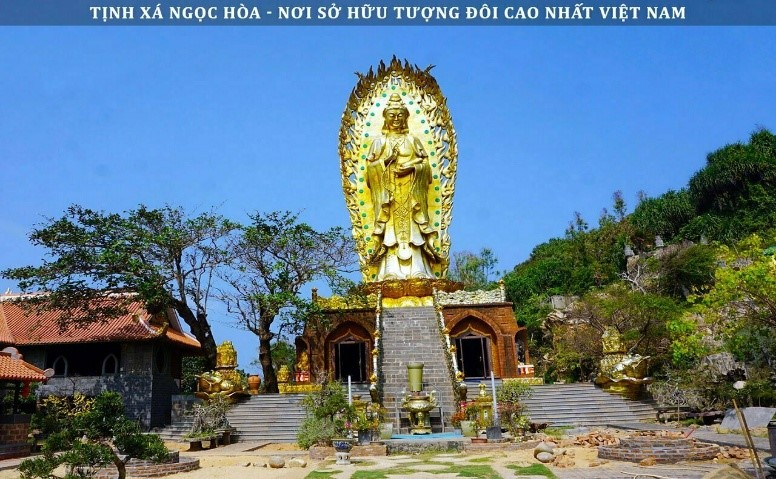
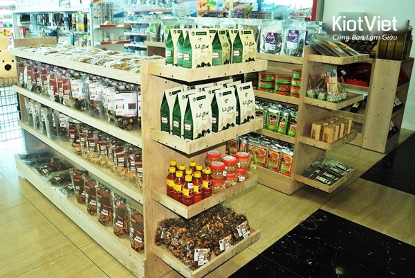
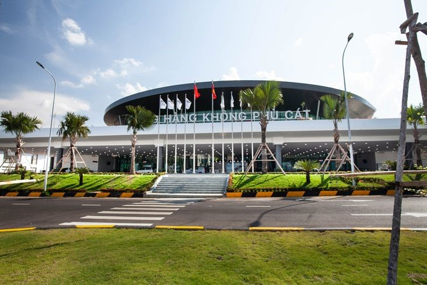

Ngày 1: TP.HCM - QUY NHƠN - Khám phá thành phố biển
Cả đoàn tập trung tại sân bay Tân Sơn Nhất, làm thủ tục bay ra sân bay Phù Cát – Quy Nhơn
Máy bay cất cánh, bắt đầu hành trình!
Hạ cánh tại Quy Nhơn, xe đã chờ sẵn đưa đoàn về trung tâm thành phố (~45 phút)
Dừng chân ăn sáng tại quán Bún chả cá Ngọc Liên – món đặc sản trứ danh của xứ Nẫu!
Lên xe đến tham quan Chùa Thiên Hưng – nơi nhiều người ghé thăm để cầu bình an, may mắn.

Di chuyển đến nhà hàng
Ăn trưa tại Cơm niêu Hội An – Quy Nhơn
Món ăn đậm chất quê, có cơm cháy giòn rụm, cá kho tộ, rau luộc…
Ghé Tháp Đôi Chăm Pa – hơn 800 năm tuổi, độc đáo và ấn tượng
Tiếp tục hành trình đến Ghềnh Ráng – Tiên Sa, viếng mộ thi sĩ Hàn Mặc Tử và chụp ảnh tại bãi tắm Hoàng Hậu với những viên đá tròn độc đáo.
Về lại trung tâm, check-in khách sạn Grand Hyams – nghỉ ngơi, ngắm biển từ phòng view đẹp
Đoàn dùng bữa tại nhà hàng hải sản C.ine – tươi ngon, đậm đà vị biển
Tự do dạo chợ đêm Quy Nhơn
Gợi ý: Bánh xèo tôm nhảy, nem nướng, chè, đồ lưu niệm... tha hồ thưởng thức và mua quà về cho người thân
Ngày 2: QUY NHƠN - PHÚ YÊN - GHỀNH ĐÁ ĐĨA - BÃI XÉP.
Ăn sáng tại khách sạn, nạp năng lượng cho một ngày khám phá thú vị.
Lên xe khởi hành đi Phú Yên, cách Quy Nhơn khoảng 100km (~2 tiếng đi xe).
Trên đường đi có thể ngắm biển, đồng ruộng và cảnh vật làng quê miền Trung.
Tham quan Nhà thờ Mằng Lăng – một trong những nhà thờ cổ nhất Việt Nam, nơi lưu giữ cuốn sách Quốc ngữ đầu tiên.
Hoàn toàn miễn phí cho du khách
Tiếp tục di chuyển
Tham quan Ghềnh Đá Đĩa – kỳ quan thiên nhiên với những khối đá xếp lớp độc đáo như tổ ong
Ghé Cầu Gỗ Ông Cọp – cây cầu gỗ dài nhất Việt Nam, rất "chill" để chụp ảnh.
Dừng chân ăn trưa tại Nhà hàng Đầm Ô Loan – nổi tiếng với sò huyết, cá nướng, hải sản tươi ngon.
Tham quan Bãi Xép – Ghềnh Ông, nơi quay phim “Tôi thấy hoa vàng trên cỏ xanh”
Vừa có biển xanh, đồi cỏ, ghềnh đá – tha hồ sống ảo
Lên xe quay về lại Quy Nhơn
Về tới khách sạn, nghỉ ngơi thư giãn
Ăn tối tại TRE Restaurant – nhà hàng sang trọng, giá cả hợp lý
Tự do khám phá Quy Nhơn về đêm
Gợi ý: ghé phố ẩm thực, dạo biển, quán cà phê view đẹp hoặc ngồi uống dừa tán gẫu với bạn bè.
Ngày 3: BIỂN XANH KỲ CO – EO GIÓ – CHIA TAY QUY NHƠN- Khám phá thành phố biển
Một buổi sáng mát lành ở biển – Một buổi chiều nhẹ nhàng kết thúc hành trình
Cả đoàn Trả phòng khách sạn, ăn sáng nhẹ để chuẩn bị cho chuyến khám phá biển cuối cùng
Xe đưa đoàn đến bến Nhơn Lý – nơi bắt đầu hành trình đi Kỳ Co bằng cano siêu nhanh, siêu vui!
Lên cano, lướt sóng ra bãi biển Kỳ Co – nước xanh ngọc bích, bãi cát trắng trải dài.
Tắm biển, lặn ngắm san hô rực rỡ, chụp hình “sống ảo” tại Eo Gió – nơi gió biển thổi lồng lộng và cảnh vật hùng vĩ
Quay về lại bến Nhơn Lý
Dừng chân ăn trưa tại Coco Jambo – nhà hàng hải sản ven biển nổi tiếng.
Sức chứa: khoảng 100 khách, rộng rãi và mát mẻ.

Ghé thăm Tịnh xá Ngọc Hòa, nơi có tượng Phật đôi cao nhất Việt Nam – không gian yên bình, thích hợp để cầu bình an.

Trên đường ra sân bay, ghé Cửa hàng đặc sản Vân Ý để mua quà về cho người thân.
Có thể đóng gói, giao hàng tận nơi nếu cần – tiện lợi và chu đáo.

Xe đưa đoàn ra sân bay Phù Cát, làm thủ tục chuyến bay.
Máy bay cất cánh, kết thúc chuyến đi 3 ngày 2 đêm đầy nắng gió, biển xanh và kỷ niệm đáng nhớ.
